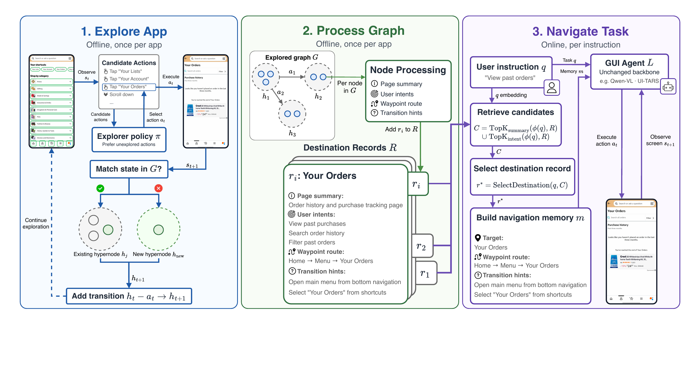

Not All Graphs Are Maps: A Task-Agnostic Exploration Framework for
Mobile GUI Navigation
Dataset
exploreragent8/DestBench


A curated collection of real Android app navigation trajectories with natural-language instructions, frame-by-frame screenshots, and grounded UI actions for evaluating mobile GUI agents.
A random task plays on load. The instruction types out, then each screenshot appears with animated tap coordinates or scroll gestures, stepping through the agent path.
—
Click an application to browse its navigation tasks, then select a prompt to preview that trajectory.
Distribution of navigation tasks across applications in the benchmark.